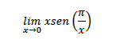
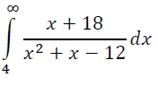
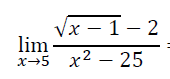
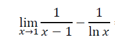
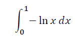
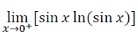
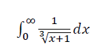
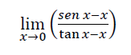
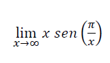
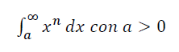

ESCOM
Inicio
EXAMEN 6
1.-Realice el siguiente limite usando L'Hopital.

a. -π
b. π/2
c.π
d. 4π/3
2.-Determina si la siguiente integral es convergente o divergente y encuentre su valor

a.Converge 2
b. Converge -5/16
c. Converge 3/5
d. Diverge
3.-Realice el siguiente limite usando L'Hopital.

a. 1/40
b. 3/20
c. 0
d. -1/40
4.-Realice el siguiente limite usando L'Hopital.

a. -1/2
b. 0
c. 1
d. 1/2
5.-Determina si la siguiente integral es convergente o divergente y encuentre su valor

a. Converge 2/3
b. Converge -1
c. Diverge
d. Converge 1
6.-Realice el siguiente limite usando L'Hopital.

a. 0
b. 3/5
c. -1
d. 2/3
7.-Determina si la siguiente integral es convergente o divergente y encuentre su valor

a. Converge -1/5
b. Converge 2/5
c. Diverge
d. Converge 21
8.-Realice el siguiente limite usando L'Hopital.

a. -1/2
b. 1/2
c. 5
d. -5
9.-Realice el siguiente limite usando L'Hopital.

a. 102π/5
b. 102π/3
c. -π
d. π
10.-Determina si la siguiente integral es convergente o divergente y encuentre su valor

a. Converge -8a
3
b. Converge 8a
3
c. Converge 4a
3
d. Diverge
Regresar.
Asegurate de contestar todas las preguntas.